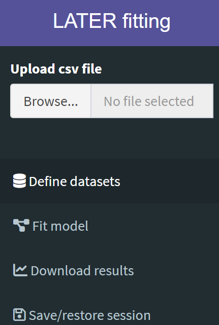

The LATER fitting R Shiny application (“the app”), is designed to provide a simple way to use LATERmodel to fit the LATER model to reaction time data.
On loading, the app displays a sidebar on the left with a widget to upload your data, followed by four tabs:

- Define datasets is used to subset the uploaded dataset by participant and conditions, allowing the user to create a named “dataset” for each, to use the app’s fitting and plotting procedures.
- Fit model is used to fit your datasets with the LATER model.
- Download results is used to customise various aspects of the LATER plot (e.g. axis labels, range, and figure size), and to download the figure in various formats, in addition to the raw data that was used to generate the figure.
- Save/restore session can be used to save the state of the app at any time, which will download a file to your local computer. This file can subsequently be uploaded to the app from the same tab to resume your analysis where you left it.
In general, fitting your reaction time data involves working through the tabs in succession.
Loading in Data, and Creating a Named Dataset From These Data
Loading in Data
Reaction time data can be loaded by clicking the “Browse…” button
under “Upload cvs file” in the left sidebar and navigating to the file
you wish to upload from your local computer. Data needs to be in a
comma-separated values (.csv) file. The following random sample of 10
rows taken from the sample data file
carpenter_williams_1995 (provided with the LATERmodel
package), demonstrates this format:
dplyr::sample_n(LATERmodel::carpenter_williams_1995, 10)
#> participant condition time
#> 1 a p50 260
#> 2 a p95 200
#> 3 a p95 200
#> 4 b p95 130
#> 5 b p95 180
#> 6 a p95 160
#> 7 b p90 230
#> 8 b p95 190
#> 9 a p95 230
#> 10 b p95 190In this data file, participant gives a unique identifier for
each participant tested, condition gives the label for the
particular experiment performed by the participant, and time
gives the reaction time in milliseconds. For example, in
carpenter_williams_1995, two participants have been
labelled “a” and “b”, and they each performed seven experiments in which
the probability of the target appearing on a particular side changed
(labelled “p05”, “p10”, “p25”, “p50”, “p75”, “p90” and “p95” in the
complete file). Data files can also include an optional column labelled
“color”, that will determine the colour of the plot. Colours can be
listed as names accepted by R (e.g. “darkgray”) or can be hexadecimal
colour codes.
You can see the complete list of color names accepted by R using the
built-in colors function (here we show only the first
20):
Creating a Named Dataset From These Data
Once loaded, a Dataset can be created, which are subsets of the loaded data that can then be fitted and plotted. To create a Dataset:
- Click the Participant drop-down menu and select the participant you wish to include. Note that only one participant can be selected at a time.
- Click the Conditions drop down menu to select the condition to be included in the Dataset. If multiple conditions are selected in succession, these will be merged into the single named Dataset.
- Give the Dataset a unique name in the Dataset Name field.
- Click Add dataset.
Each new Dataset is appended to the table of “Created datasets” on the right of the screen, and the raw data is plotted in the figure. Datasets can be removed by clicking the “Remove” button on the corresponding row of the table.
Fitting the LATER Model to a Dataset
On the “Fit model” tab, click on the “Datasets to fit” field, and successively select the Dataset(s) you wish to fit. There are several fitting options available:
-
Model components
- Use intercept form: select this option if you wish to constrain fits to have a common intercept (\(k\)) at infinite time on a reciprobit plot (the most common interpretation of a “swivel”). Note that the intercept \(k\) is equal to \(\frac{\mu}{\sigma}\).
- Fit with early component: select this option if you wish your fit to include a parameter \(\sigma_{e}\) that quantifies a tail of early responses in your reaction times.
-
Fitting methods
- Fitting criterion allows you to select whether you would like to perform a maximum likelihood fit (recommended) or a fit that minimises the Kolmogorov-Smirnov (KS) statistic.
- When fitting multiple Datasets using shared parameters, the Use minmax option will optimise the fit for the worse fitted dataset in the collection of Datasets.
- Shared parameters: these options determine which parameters, if any, will have a common value between the Datasets to be fit. Note that, if you have selected multiple Datasets, you must have at least one shared parameter for the fit to proceed.
Once suitable options have been selected, provide a unique name for the fit in the Fit Name field, and perform the fit by clicking the Fit datasets button.
Upon fitting, the fit parameters will be appended to a table of fits in the right of the screen, along with the fitting criterion (“ks” or “likelihood”), the value of the fit criterion, the fit’s negative log-likelihood (natural log), and the Akaike Information Criterion (“aic”).
Fits are also visualised in the plot, with a drop-down menu to select which fit you would like to visualise.
Example fits would be:
- Swivel about infinite time: select Use intercept form and \(k = \frac{\mu}{\sigma}\)” from the list of shared parameters. Fit with early component (and, if selected, the option to share \(\sigma_{e}\)) is optional.
- Shift: a fit where \(\mu\) differs between Datasets, but \(\sigma\) is common: leave Use intercept form unchecked, and under Shared parameters select \(\sigma\). As above, options for early components are optional.
- Swivel about a cumulative probability of 50%: corresponding to an alteration in \(\sigma\) alone between datasets. Leave Use intercept form unchecked, and under Shared parameters select \(\mu\). As above, options for early components are optional.
Customising a plot
On the Download results tab, use the Name of fit drop-down menu to select the fit you wish to visualise and customise. Options include:
- Time unit: latencies are expressed as milliseconds, deciseconds, or seconds.
- Label for x-axis: the x-axis can be labelled either “Latency” or “Reaction time”.
- Time range (ms): the range of values on the x axis, in milliseconds, to be visualised.
- Probability range: the range of values on the y axis to be visualised.
- Reciprobit axes: By default, figures are plotted with Promptness on the x-axis, and Z-score on the y-axis. Selecting this option will also include latency and cumulative percent probability as secondary axis ticks and labels, as used in traditional reciprobit plots.
- Plot dimensions (width, height, units): the dimensions of the plot, and what units these dimensions are in.
- Figure format: which format you wish to download the figure as.
Once you are happy with your figure customisation, it (along with the data and fits used to generate such figure) can be downloaded by clicking the Download button.
Saving or restoring a session
If you would like to continue your work at another time or on a different computer, or share your work with someone else who would like to replicate your analysis, you can save your progress using the button Save state of app.
This will download a file with an .rds extension, which
you will need to upload to the shiny app when you are ready to continue
your analysis work.